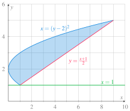
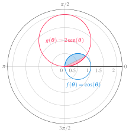

9 2024-04-16
Examen de Análisis II
Ejercicio 9.1 Calcular mediante sumas de Riemann la integral inferior de Riemann de la función \(f(x) = x^3-3x^2\) en el intervalo \([1, 2]\).
Veamos primero si la función es creciente o decreciente en el intervalo \([1, 2]\).
\[ f'(x) = 3x^2-6x = 3x(x-2) = 0 \Leftrightarrow x=0 \mbox{ o } x=2 \]
Como \(f'(1) = -3 < 0\) la función es decreciente en el intervalo \([1, 2]\), y por tanto, \(f(x)\) alcanzará el valor mínimo en el extremo derecho de cualquier subintervalo de una partición de \([1, 2]\).
Si consideramos una partición del intervalo \([1, 2]\) en \(n\) subintervalos de longitud \(\Delta x = \frac{2-1}{n} = \frac{1}{n}\), entonces los extremos de los subintervalos serán \(P_n([0,1]) = \left\{x_i = 1 + \frac{i}{n}: i = 0, \ldots, n\right\}\).
Calculamos ahora la suma inferior de Riemann para esta partición.
\[\begin{align*} s(f,P_n) &= \sum_{i=1}^{n} f(x_i) \Delta x = \sum_{i=1}^{n} f\left(1 + \frac{i}{n}\right) \frac{1}{n} \\ &= \sum_{i=1}^{n} \left(1 + \frac{i}{n}\right)^3 - 3\left(1 + \frac{i}{n}\right)^2 \frac{1}{n} \\ &= \sum_{i=1}^{n} \left(1 + 3\frac{i}{n} + 3\frac{i^2}{n^2} + \frac{i^3}{n^3}\right) - 3\left(1 + 2\frac{i}{n} + \frac{i^2}{n^2}\right) \frac{1}{n} \\ &= \sum_{i=1}^{n} \left(1 + 3\frac{i}{n} + 3\frac{i^2}{n^2} + \frac{i^3}{n^3} - 3 - 6\frac{i}{n} - 3\frac{i^2}{n^2}\right) \frac{1}{n}\\ &= \sum_{i=1}^{n} \left(-2 - 3\frac{i}{n} + \frac{i^3}{n^3}\right) \frac{1}{n}\\ &= -\frac{2}{n} \sum_{i=1}^{n} 1 - \frac{3}{n^2} \sum_{i=1}^{n} i + \frac{1}{n^4}\sum_{i=1}^{n} i^3 \\ &= -\frac{2}{n} n - \frac{3}{n^2} \frac{n(n+1)}{2} + \frac{1}{n^4} \left(\frac{n(n+1)}{2}\right)^2 \\ &= -2 - \frac{3}{2} \frac{n+1}{n} + \frac{1}{4} \frac{(n+1)^2}{n^2}. \end{align*}\]
Por lo tanto, la integral inferior de Riemann de \(f(x)\) en el intervalo \([1, 2]\) es
\[\begin{align*} \underline{\int_1^2} f(x) &= \lim_{n \to \infty} s(f,P_n) = \lim_{n \to \infty} \left(-2 - \frac{3}{2} \frac{n+1}{n} + \frac{1}{4} \frac{(n+1)^2}{n^2}\right) \\ &= -2 - \frac{3}{2} + \frac{1}{4} = -\frac{13}{4}. \end{align*}\]
Ejercicio 9.2 Calcular el volumen del sólido de revolución que se obtiene al rotar al rededor de la recta \(y=1\) la región limitada por las curvas \(y=\frac{x+1}{2}\) y \(x=(y-2)^2\).
Primero obtenemos los puntos de intersección de las curvas. \(y=\frac{x+1}{2} \Leftrightarrow x = 2y-1\), de manera que igualando con la otra curva obtenemos
\[ 2y-1 = (y-2)^2 \Leftrightarrow y^2 - 6y + 5 = 0 \Leftrightarrow y = 1 \mbox{ o } y = 5. \]
A continuación dibujamos las gráficas de las curvas y la recta \(y=1\) para visualizar la región.

Para calcular el volumen del sólido de revolución que se obtiene a rotar esta región alrededor de la recta \(y=1\) podríamos utilizar el método de los discos cilíndricos, pero en ese caso tendríamos que descomponer la región en dos partes, de \([0, 1]\), donde integraríamos la región entre las dos ramas de la parábola, y de \([1, 9]\), donde integraríamos la región entre la parábola y la recta. Resulta más rápido utilizar el método de los envoltorios cilíndricos integrando con respecto a \(y\) en el intervalo \([1, 5]\). Como la rotación es alrededor de la recta \(x=1\), el radio de la base de los envoltorios cilíndricos será la distancia del valor de \(y\) a esta recta, es decir, \(y-1\), y por tanto la integral que nos da el volumen del sólido de revolución es
\[\begin{align*} \int_1^5 2\pi(y-1)((2y-1) - (y-2)^2)\, dy &= 2\pi \int_1^5 (y-1)(2y-1-y^2+4y-4)\, dy \\ &= 2\pi \int_1^5 (y-1)(-y^2+6y-5)\, dy \\ &= 2\pi \int_1^5 (-y^3+7y^2-11y+5)\, dy \\ &= 2\pi \left[-\frac{y^4}{4} + \frac{7y^3}{3} - \frac{11y^2}{2} + 5y\right]_1^5 \\ &= 2\pi \left(-\frac{625}{4} + \frac{875}{3} - \frac{275}{2} + 25 + \frac{1}{4} - \frac{7}{3} + \frac{11}{2} - 5\right) \\ &=\frac{128\pi}{3}. \end{align*}\]
Ejercicio 9.3 Calcular mediante una integral definida la longitud del arco de circunferencia del círculo \(x^2+y^2=25\) desde el punto \((-3,4)\) hasta el punto \((4,3)\).
El arco de circunferencia con el que hay que trabajar está en la semicircunferencia positiva, que viene dada por la función \(f(x) = \sqrt{25-x^2}\). Así pues, la longitud de la curva de \(f\) en el intervalo \([-3,4]\) viene dada por la integral
\[\begin{align*} \int_{-3}^4 \sqrt{1 + f'(x)^2}\, dx &= \int_{-3}^4 \sqrt{1 + \left(\frac{-x}{\sqrt{25-x^2}}\right)^2}\, dx \\ &= \int_{-3}^4 \sqrt{1 + \frac{x^2}{25-x^2}}\, dx \\ &= \int_{-3}^4 \sqrt{\frac{25}{25-x^2}}\, dx \\ &= \int_{-3}^4 \sqrt{\frac{1}{1-(x/25)^2}}\, dx \\ &= \int_{-3/5}^{4/5} \frac{5}{\sqrt{1-y^2}}\, dy \tag{Cambio $y=\frac{x}{5}$}\\ &= [5\operatorname{arcsen(y)}]_{-3/5}^{4/5} \\ &= 5\left(\operatorname{arcsen}\left(\frac{4}{5}\right) - \operatorname{arcsen}\left(\frac{-3}{5}\right)\right) \\ &\approx 7.854. \end{align*}\]
Ejercicio 9.4 Calcular el area comprendida entre los círculos \(r=\cos(\theta)\) y \(r=2\operatorname{sen}(\theta)\).
En primer lugar dibujamos los círculos para visualizar la región.

En la gráfica se observa que uno de los puntos de corte de los dos círculos es el origen, que se alcanza para \(\theta = \pi/2\) en el caso de \(f\) y para \(\theta = 0\) en el caso de \(g\). El otro punto de corte está en el primer cuadrante, y para determinar su ángulo basta resolver la ecuación
\[ \cos(\theta) = 2\operatorname{sen}(\theta) \Leftrightarrow \frac{\operatorname{sen}(\theta)}{\cos(\theta)} = \frac{1}{2} \Leftrightarrow \operatorname{tg}(\theta) = \frac{1}{2} \Leftrightarrow \theta = \operatorname{arctg}(1/2) = 0.4636. \]
El área de la región que nos piden es la suma de las áreas de las regiones sombreadas en azul y rojo. El área de la región en azul, que corresponde a la función \(f(\theta)\) se puede obtener mediante la integral
\[\begin{align*} \int_{0.4636}^{\pi/2} \frac{1}{2}(\cos(\theta))^2\, d\theta &= \frac{1}{2} \int_{0.4636}^{\pi/2} \frac{1 + \cos(2\theta)}{2}\, d\theta \\ &= \frac{1}{4} \int_{0.4636}^{\pi/2} 1 + \cos(2\theta)\, d\theta \\ &= \frac{1}{4} \left[\theta + \frac{1}{2}\sin(2\theta)\right]_{0.4636}^{\pi/2} \\ &= \frac{1}{4} \left[\frac{\pi}{2} + \frac{1}{2}\sin(\pi) - 0.4636 - \frac{1}{2}\sin(2\cdot 0.4636)\right] \\ &= \frac{1}{4} \left[\frac{\pi}{2} - 0.4636 - \frac{1}{2}\sin(0.9272)\right] \\ &\approx 0.1768. \end{align*}\]
Y el área de la región en rojo, que corresponde a la función \(g(\theta)\), se obtiene mediante la integral
\[\begin{align*} \int_{0}^{0.4636} \frac{1}{2}(2\operatorname{sen}(\theta))^2\, d\theta &= \int_{0}^{0.4636} 2\operatorname{sen}^2(\theta)\, d\theta \\ &= \int_{0}^{0.4636} 1 - \cos(2\theta)\, d\theta \\ &= \left[\theta - \frac{1}{2}\sin(2\theta)\right]_{0}^{0.4636} \\ &= 0.4636 - \frac{1}{2}\sin(0.9272) \\ &\approx 0.0636. \end{align*}\]
Por tanto, el area total es \(0.1768 + 0.0636 = 0.2404\).